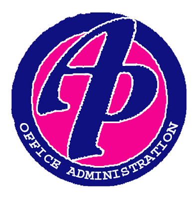

Manajemen Perkantoran (yang dahulu sering dikenal dengan sebutan Administrasi Perkantoran) adalah jurusan yang mempelajari tata kelola operasional dan kegiatan administrasi di dalam sebuah perusahaan atau organisasi. Jurusan ini menjadi tulang punggung yang memastikan seluruh kegiatan kantor berjalan rapi, teratur, dan efisien. Kamu akan belajar banyak hal praktis, mulai dari mengelola dokumen dan arsip penting, menyusun surat-menyurat resmi, mengatur jadwal rapat dan agenda pimpinan, hingga mengelola komunikasi internal maupun eksternal kantor. Selain itu, jurusan ini juga melatih keterampilan penggunaan teknologi perkantoran modern (seperti perangkat lunak pengolah kata/data) serta pembentukan sikap profesional, kerapihan, dan kemampuan komunikasi yang baik.
